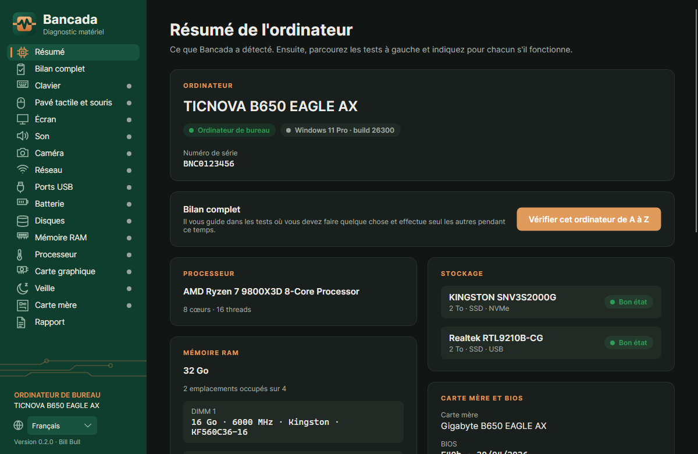

Diagnostic matériel · libre et gratuit REV 0.2
Le banc d'essai pour chaque machine qui passe par votre atelier.
Lancez Bancada sur le portable ou le PC que vous contrôlez, voyez ce qu'il contient et testez chaque pièce, du clavier à la carte graphique. À la fin, un rapport PDF prêt pour le client.
Un seul fichier d'environ 60 Mo · sans installation · Windows 10/11 et Linux x64Sous Linux : chmod +x Bancada-linux-x64

J1 · Tests
Tout ce qui peut lâcher, vérifié
Chaque test se termine par un verdict : fonctionne, avec défauts ou ne fonctionne pas. Les tests automatiques en proposent un, vous décidez.
- U01
Résumé
Marque, modèle et numéro de série, processeur, RAM par emplacement, cartes graphiques, disques, batterie, carte mère et BIOS.
- U02
Contrôle complet
Vous guide dans les tests manuels pendant qu'il fait seul les tests automatiques. Environ 20 minutes.
- U03
Clavier
Clavier dessiné avec sa vraie forme (ISO, ANSI, ABNT2). Chaque touche reçue s'allume.
- U04
Pavé tactile et souris
Zone qui se colore au passage, boutons, gestes, molette, écran tactile et stylet.
- U05
Écran
Couleurs, dégradés et grille en plein écran pour les pixels morts et les fuites de lumière.
- U06
Son
Haut-parleur gauche et droit, balayage des graves aux aigus et micro avec enregistrer et écouter.
- U07
Caméra
Image en direct de chaque caméra. Prévient si elle reste noire. Rien n'est enregistré.
- U08
Réseau
Cartes réseau, Wi-Fi, Bluetooth, connexion étape par étape et débit Internet.
- U09
Ports USB
Marque chaque port qui répond avec sa vitesse réelle. Repère l'USB 3 qui tourne en USB 2.
- U10
Batterie et chargeur
Santé et cycles, consommation en direct, autonomie réelle par usage et test du chargeur.
- U11
Disques
Santé SMART, erreurs enregistrées par le système et vitesse réelle de lecture et d'écriture.
- U12
Mémoire RAM
8 motifs sur toute la mémoire libre, bit par bit.
- U13
Processeur
Test de charge qui détecte la surchauffe, la limitation thermique et les erreurs de calcul.
- U14
Carte graphique
Charge sur n'importe quelle carte graphique avec calcul vérifié et test de la mémoire vidéo.
- U15
Veille
Met en veille, réveille et vérifie que le réseau et les périphériques reviennent.
- U16
Carte mère
Firmware, TPM, périphériques en erreur, liens PCIe, erreurs matérielles et pile CMOS.
- J2
Rapport PDF
Tous les tests avec mesures, remarques et verdicts, sur un A4 à remettre.
J3 · Captures
En images
Une interface native à l'image d'une carte mère : vernis vert, pistes de cuivre et sérigraphie.
J4 · Fonctionnement
Trois étapes, vingt minutes
- 01
Lancez-le
Depuis une clé USB ou un téléchargement. Pas d'installation, pas de compte, aucune trace.
- 02
Suivez le contrôle guidé
Vous appuyez sur des touches, regardez et écoutez. Pendant ce temps, Bancada teste disques, réseau, mémoire, processeur et carte graphique en arrière-plan.
- 03
Remettez le rapport
Un PDF avec chaque mesure et chaque verdict, vos notes et le numéro de série de la machine.
J5 · Fiche technique
Fiche technique
Fait par des techniciens, pour des techniciens. Pas de couche web, rien à installer.
Vos machines et celles de vos clients restent sur l'établi
Bancada ne collecte ni n'envoie aucune donnée. La caméra et le micro ne sont jamais enregistrés, et le rapport reste dans votre dossier Documents. Il ne va sur Internet que pour :
- Vérifier la connexion (routeur, DNS et un site sécurisé).
- Mesurer le débit, seulement si vous appuyez sur le bouton (Cloudflare).
- Comparer l'horloge de la carte mère avec l'heure d'Internet.
- Ouvrir des pages web dans le mode navigation du test de batterie.
- Plateformes
- Windows 10/11 x64 · Linux x64
- Format
- Un exécutable autonome d'environ 60 Mo
- Interface
- Native avec Avalonia 12 sur .NET 10 (sans Electron)
- Droits
- Utilisateur standard ; en administrateur ou avec sudo, aussi barrettes RAM, numéro de série et SMART SATA
- Langues
- Español, English, Português, Français, Deutsch, Italiano
- Rapport
- PDF A4 dans la langue choisie
- Licence
- GPL-3.0 ou ultérieure, code ouvert
- Télémétrie
- Aucune. Sans compte, sans publicité

J6 · Soutenir
Gratuit aujourd'hui et pour toujours
Bancada n'a pas de version payante. S'il vous fait gagner du temps à l'atelier, vous pouvez l'aider à grandir.